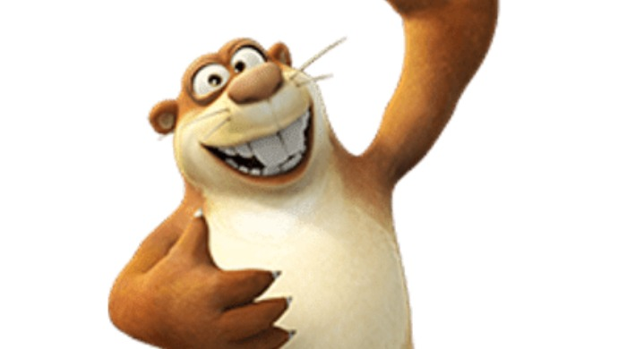

Bablu dablu
Bablu dabluThe series originated from China, and within no time gained a lot of popularity among kids in other countries. The series is produced by Fantawild Holdings Inc. The cartoon series showcases a brotherly bond between two bears Bablu and Dablu, who try to stop Logger Vick from destroying their forest home.
Bablu

Bablu is the elder brother who is fierce as compared to his younger sibling Dablu. Bablu is wiser and utilizes his energy in saving his home from Logger Vick. Bablu and Dablu fight a lot just like every sibling does!
Dablu
Bablus younger brother Dablu also tries to stop Logger Vick from cutting down trees and saves his home from getting destroyed. Dablu is quite lazy and loves to sleep a lot. He also loves food, especially honey.
Herbert_diggs
Herbert Diggs is a rat who also lives in the forest along with other animals. He loves to eat radish and makes his own house by digging a burrow. Herbert Diggs can go to any extent to protect his favourite food.
Loggervick

Logger Vick much as the name suggests, is a logger, whose job is to cut down trees from the forest. He plans to cut down the majority of the trees, in order to sell them to make some income for his old age. He goes to the forest to cut down trees and meets the bear brothers. Logger Vick is always seen carrying a chainsaw and a shotgun.
Owl

Hoo Hoo is an owl who stays in the forest, and is a friend to the bear brothers. Hoo Hoo is quite lazy just like Dablu, and sleeps while he is flying.
Tiki

Tiki is a monkey and a friend of the bear brothers. Tiki thinks he is the king of the jungle, and that the forest belongs to him.
Warren

Warren is a not so confident squirrel and is best friends with Bablu and Dablu. Along with the bear brothers, Warren also tries his level best to stop Logger Vick from destroying their home.